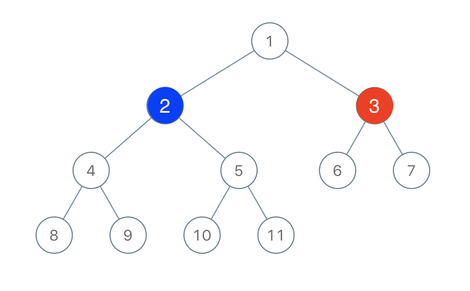

Binary Tree Coloring Game
Link: Binary Tree Coloring Game
Problem description
Two players play a turn based game on a binary tree. We are given the root of this binary
tree, and the number of nodes n in the tree. nis odd, and each node has a
distinct value from 1 to n.
Initially, the first player names a value x with 1 <= x <= n, and the
second player names a value y with 1 <= y <= n and y != x.
The first player colors the node with value x red, and the second player colors the node
with value y blue.
Then, the players take turns starting with the first player. In each turn, that player chooses a node of their color (red if player 1, blue if player 2) and colors an uncolored neighbor of the chosen node (either the left child, right child, or parent of the chosen node.)
If (and only if) a player cannot choose such a node in this way, they must pass their turn. If both players pass their turn, the game ends, and the winner is the player that colored more nodes.
You are the second player. If it is possible to choose such a y to ensure you win the game,
return true. If it is not possible, return false.
Example 1:

Constraints:
rootis the root of a binary tree withnnodes and distinct node values from1ton.nis odd.1 <= x <= n <= 100
Method
There are three possible place to choose.
- Left subtree of first player node.
- Right subtree of first player node.
- Any other nodes.
Count these three condition nodes and find if any of these conditions has more than n / 2 nodes.
If they do, then it is possible. Otherwise, it is not possible for player 2 to win.
Code
private int left, right, target;
/**
* There are three possible place to choose.
* 1. Left subtree of first player node.
* 2. Right subtree of first player node.
* 3. Any other nodes.
* Count these three condition nodes and find if any of these conditions has more than n / 2 nodes.
* If they do, then it is possible. Otherwise, it is not possible for player 2 to win.
*
* @param root root of tree
* @param n total nodes in tree
* @param x first player chose node
* @return if possible to choose such a y to ensure win the game, return true, return false otherwise.
*/
public boolean btreeGameWinningMove(TreeNode root, int n, int x) {
this.target = x;
dfs(root);
/*
* Condition 1: player 2 choose left subtree of x.
* Condition 2: player 2 choose right subtree of x.
* Condition 3: player 2 choose rest of tree.
* Find condition has most nodes and see if it has more than n / 2 nodes. */
return Math.max(Math.max(left, right), n - left - right - 1) > n / 2;
}
private int dfs(TreeNode root) {
if (root == null) {
return 0;
}
int l = dfs(root.left), r = dfs(root.right);
if (root.val == this.target) { // count left subtree node and right subtree node
left = l;
right = r;
}
return l + r + 1;
}